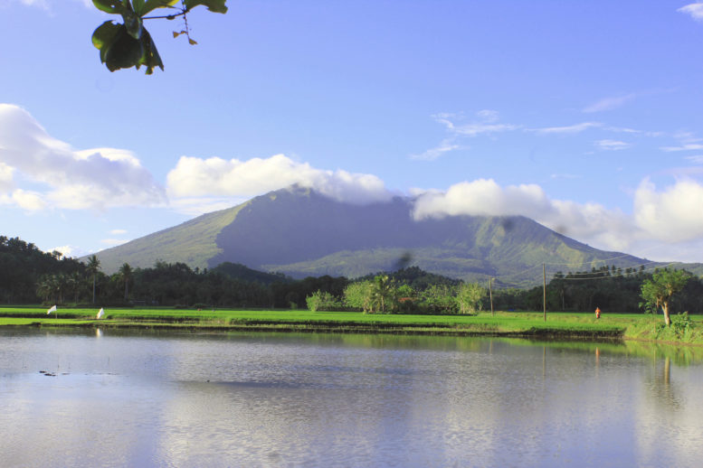

Explore the peaceful lakes, scenic views, and relaxing natural spots that make Albay a great destination for nature lovers.
Lake tourism in Albay offers calm and refreshing experiences surrounded by nature. Visitors can enjoy quiet environments, beautiful landscapes, and relaxing activities such as sightseeing and photography. These lakes are perfect for those who want to escape the busy city and enjoy peaceful surroundings.

One of the most well-known lakes near Albay, Lake Buhi is famous for its natural beauty and calm environment.

A peaceful lake surrounded by greenery, perfect for relaxing and enjoying nature away from crowded places.

Known for its quiet atmosphere, Danao Lake is ideal for visitors who enjoy calm surroundings and scenic views.

Located near Albay, this lake offers a beautiful forest setting and is perfect for sightseeing, boating, and nature trips.
Visitors can enjoy sightseeing, taking photos, and relaxing near the lake. You can experience peaceful surroundings, fresh air, and beautiful natural views. Some areas also allow boating, fishing, and short walks around the lake. You can also enjoy quiet picnics with family and friends while appreciating the calm environment. Watching the sunrise or sunset by the lake is also a great experience for visitors.
Bring comfortable clothes, water, and snacks for your trip. Always check the weather before visiting and follow safety guidelines. Keep the environment clean by properly disposing of trash. It is also recommended to bring a camera to capture the scenic views. Visit early in the day to enjoy the peaceful atmosphere and avoid crowds. Be respectful of nature and avoid disturbing wildlife around the lake.